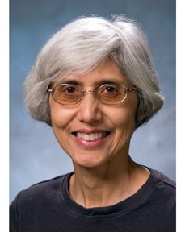

|
|
|
Description
|
HardBD
: Data properties and hardware characteristics are two
key aspects for efficient data management. A clear trend
in the first aspect, data properties, is the increasing
demand to manage and process Big Data in both enterprise
and consumer applications, characterized by the fast
evolution of Big Data Systems, such as Key-Value stores,
Document stores, Graph stores, Spark, MapReduce/Hadoop,
Graph Computation Systems, Tree-Structured Databases, as
well as novel extensions to relational database systems.
At the same time, the second aspect, hardware
characteristics, is undergoing rapid changes, imposing
new challenges for the efficient utilization of hardware
resources. Recent trends include massive multi-core
processing systems, high performance co-processors, very
large main memory systems, persistent main memory, fast
networking components, big computing clusters, and large
data centers that consume massive amounts of energy.
Utilizing new hardware technologies for efficient Big
Data management is of urgent importance.
Active :
Existing approaches to solve data-intensive problems
often require data to be moved near the computing
resources for processing. These data movement costs can
be prohibitive for large data sets. One promising
solution is to bring virtualized computing resources
closer to data, whether it is at rest or in motion. The
premise of active systems is a new holistic
view of the system in which every data medium and every
communication channel become compute-enabled. The Active
workshop aims to study different aspects of the active
systems' stack, understand the impact of active
technologies (including but not limited to hardware
accelerators such as SSDs, GPUs, FPGAs, and ASICs) on
different applications workloads over the lifecycle of
data, and revisit the interplay between algorithmic
modeling, compiler and programming languages,
virtualized runtime systems and environments, and
hardware implementations, for effective exploitation of
active technologies.
HardBD &
Active'22 : Both HardBD and
Active are interested in exploiting hardware
technologies for data-intensive systems. The aim of this
one-day joint workshop is to bring together researchers,
practitioners, system administrators, and others
interested in this area to share their perspectives on
exploiting new hardware technologies for data-intensive
workloads and big data systems, and to discuss and
identify future directions and challenges in this area.
The workshop aims at providing a forum for academia and
industry to exchange ideas through research and position
papers.
[
Go to Top ]
|
|
Topics
|
|
Topics of interest include but
are not limited to:
- Systems Architecture on New Hardware
- Data Management Issues in Software-Hardware-System
Co-design
- Main Memory Data Management (e.g. CPU Cache
Behavior, SIMD, Lock-Free Designs, Transactional
Memory)
- Data Management on New Memory Technologies (e.g.,
SSDs, NVMs)
- Active Technologies (e.g., GPUs, FPGAs, and ASICs)
in Co-design Architectures
- Distributed Data Management Utilizing New Network
Technologies (e.g., RDMA)
- Novel Applications of New Hardware Technologies in
Query Processing, Transaction Processing, or Big Data
Systems (e.g., Hadoop, Spark, NoSQL, NewSQL, Document
Stores, Graph Platforms etc.)
- Novel Applications of Low-Power Modern Processors
in Data-Intensive Workloads
- Virtualizing Active Technologies on Cloud (e.g.,
Scalability and Security)
- Benchmarking, Performance Models, and/or Tuning of
Data Management Workloads on New Hardware Technologies
[
Go to Top ]
|
|
Submission Guidelines
|
|
|
|
Important Dates
|
| Paper submission: |
February 8, 2022 (Tuesday) 11:59:00 PM PT
February 22, 2022 (Tuesday) 11:59:00 PM PT
|
| Notification of
acceptance: |
March 4, 2022 (Friday)
|
| Camera-ready
copies: |
March 15, 2022 (Tuesday)
|
| Workshop: |
May 9, 2022 (Monday) |
[
Go to Top ]
|
|
Program
|
9:10-9:20am MYT Opening and Introductions
9:20-11:00am MYT SMDB and HardBD&Active Joint Keynote Session I
11:00-11:10am MYT Break
11:10-12:00pm MYT SMDB Founders & Pioneers Keynote Talk
12:00-14:00pm MYT Long Break
14:00-15:40pm MYT SMDB and HardBD&Active Joint Keynote Session II
15:40-15:50pm MYT Break
15:50-16:50pm MYT Research Session
- Learned Index on GPU.
Xun Zhong, Yong Zhang, Yu Chen, Chao Li, Chunxiao Xing (Tsinghua University)
- BOUNCE: Memory-Efficient SIMD Approach for Lightweight Integer Compression.
Juliana Hildebrandt, Dirk Habich, Wolfgang Lehner (TU Dresden)
- DOE: Database Offloading Engine for Accelerating SQL Processing (Invited Paper)
Wenyan Lu, Yan Chen, Jingya Wu, Yu Zhang, Xiaowei Li, Guihai Yan (Chinese Academy of Sciences & YUSUR Technology Co., Ltd.)
16:50-17:00pm MYT Closing
[
Go to Top ]
|
|
Keynote Talks
|
|
|
|
Deep Data Integration
Wang-Chiew Tan
Research Scientist, Facebook AI
|
Abstract:
We are witnessing the widespread adoption of deep learning techniques as
avant-garde solutions to different computational problems in recent years. In
data integration, the use of deep learning techniques has helped establish
several state-of-the-art results in long standing problems, including
information extraction, entity matching, data cleaning, and table
understanding. In this talk, I will reflect on the strengths of deep learning
and how that has helped move forward the needle in data integration. I will
also discuss a few challenges associated with solutions based on deep learning
techniques and describe some opportunities for the future work.
Bio:
Wang-Chiew is a research scientist manager at Meta AI. Before she was the Head
of Research at Megagon Labs, where she led the research efforts on building
advanced technologies to enhance search by experience. This included research
on data integration, information extraction, text mining and summarization.
Prior to joining Megagon Labs, she was a Professor of Computer Science at
University of California, Santa Cruz. She also spent two years at IBM Research
- Almaden.
|
|
|
Towards Instance-Optimized Data Systems
Tim Kraska
Associate Professor, MIT
|
Abstract:
Recently, there has been a lot of excitement around ML-enhanced (or learned)
algorithms and data structures. For example, there has been work on applying
machine learning to improve query optimization, indexing, storage layouts,
scheduling, log-structured merge trees, sorting, compression, sketches, among
many other data management tasks. Arguably, the ideas behind these techniques
are similar: machine learning is used to model the data and/or workload in
order to derive a more efficient algorithm or data structure. Ultimately, what
these techniques will allow us to build are “instance-optimized” systems;
systems that self-adjust to a given workload and data distribution to provide
unprecedented performance and avoid the need for tuning by an administrator. In
this talk, I will first provide an overview of the opportunities and
limitations of current ML-enhanced algorithms and data structures, present
initial results of SageDB, a first instance-optimized system we are building as
part of DSAIL@CSAIL at MIT, and finally outline remaining challenges and future
directions.
Bio:
Tim Kraska is an Associate Professor of Electrical Engineering and Computer
Science in MIT's Computer Science and Artificial Intelligence Laboratory,
co-director of the Data System and AI Lab at MIT (DSAIL@CSAIL), and co-founder
of Einblick Analytics. Currently, his research focuses on building systems for
machine learning, and using machine learning for systems. Before joining MIT,
Tim was an Assistant Professor at Brown, spent time at Google Brain, and was a
PostDoc in the AMPLab at UC Berkeley after he got his PhD from ETH Zurich. Tim
is a 2017 Alfred P. Sloan Research Fellow in computer science and received
several awards including the VLDB Early Career Research Contribution Award, the
VMware Systems Research Award, the university-wide Early Career Research
Achievement Award at Brown University, an NSF CAREER Award, as well as several
best paper and demo awards at VLDB, SIGMOD, and ICDE.
|
|
|
Modern Cloud DBMSs Vindicate Age-Old Work on Shared Disks DBMSs!
C. Mohan
Distinguished Visiting Professor, Tsinghua University, China
|
Abstract:
Over 3 decades ago, when the database research community was enamored of shared
nothing database management systems (DBMSs), some of us were focused on DBMSs
which were based on the shared disks (SD) architecture. While my own work
involved IBM’s DB2 on the mainframe, earlier SD product work had been done by
DEC, IBM (with IMS), Oracle and a couple of Japanese vendors. The research
community didn’t appreciate that much our SD work even though IBM and Oracle
have been quite successful with their SD relational DBMS products. With the
emergence of the public cloud, many classical on-premises DBMSs have been
ported to the cloud arena. New DBMSs have also been developed from scratch to
work in the cloud environment. One of the dominant characteristics of the cloud
DBMSs is that they are embracing the SD architecture because of the
architectural separation of compute nodes and storage nodes (also called
disaggregated storage) in the cloud environment to gain several advantages. I
feel that these recent developments vindicate our age-old SD work! In this
talk, I will first introduce traditional (non-cloud) parallel and distributed
database systems. I will cover concepts like SQL and NoSQL systems, data
replication, distributed and parallel query processing, and data recovery after
different types of failures. Then, I will discuss how the emergence of the
(public) cloud has introduced new requirements on parallel and distributed
database systems, and how such requirements have necessitated fundamental
changes to the architectures of such systems which includes embracing at least
some of the SD ideas. I will illustrate the related developments by discussing
the details of several cloud DBMSs.
Bio:
Dr. C. Mohan is currently a Distinguished Visiting Professor at Tsinghua
University in China, a Visiting Researcher at Google, a Member of the inaugural
Board of Governors of Digital University Kerala, and an Advisor of the Kerala
Blockchain Academy (KBA) and the Tamil Nadu e-Governance Agency (TNeGA) in
India. He retired in June 2020 from being an IBM Fellow at the IBM Almaden
Research Center in Silicon Valley. He was an IBM researcher for 38.5 years in
the database, blockchain, AI and related areas, impacting numerous IBM and
non-IBM products, the research and academic communities, and standards,
especially with his invention of the well-known ARIES family of database
locking and recovery algorithms, and the Presumed Abort distributed commit
protocol. This IBM (1997-2020), ACM (2002-) and IEEE (2002-) Fellow has also
served as the IBM India Chief Scientist (2006-2009). In addition to receiving
the ACM SIGMOD Edgar F. Codd Innovations Award (1996), the VLDB 10 Year Best
Paper Award (1999) and numerous IBM awards, Mohan was elected to the United
States and Indian National Academies of Engineering (2009), and named an IBM
Master Inventor (1997). This Distinguished Alumnus of IIT Madras (1977)
received his PhD at the University of Texas at Austin (1981). He is an inventor
of 50 patents. During the last many years, he focused on Blockchain, AI, Big
Data and Cloud technologies (https://bit.ly/sigBcP, https://bit.ly/CMoTalks).
Since 2017, he has been an evangelist of permissioned blockchains and the myth
buster of permissionless blockchains. During 1H2021, Mohan was the Shaw
Visiting Professor at the National University of Singapore (NUS) where he
taught a seminar course on distributed data and computing. In 2019, he became
an Honorary Advisor to TNeGA for its blockchain and other projects. In 2020, he
joined the Advisory Board of KBA. Since 2016, Mohan has been a Distinguished
Visiting Professor of China’s prestigious Tsinghua University. In 2021, he was
inducted as a member of the inaugural Board of Governors of the new Indian
university Digital University Kerala (DUK). Mohan has served on the advisory
board of IEEE Spectrum, and on numerous conference and journal boards. In 2022,
he became a consultant at Google with the title of Visiting Researcher. He has
also been a Consultant to the Microsoft Data Team. Mohan is a frequent speaker
in North America, Europe and Asia. He has given talks in 43 countries. He is
highly active on social media and has a huge network of followers. More
information can be found in the Wikipedia page at https://bit.ly/CMwIkP and his homepage at https://bit.ly/CMoDUK
|

|
|
Accelerating Data Analytics in the Era of Ubiquitous Computing: Opportunities and Challenges
Maya Gokhale
Distinguished Member of Technical Staff, Lawrence Livermore National Laboratory, USA
|
Abstract:
With innovations in storage and memory capacity combined with the profusion of
acceleration architectures, opportunities abound to gain insight from
exponentially increasing data sources. Compute functions can be distributed
among sensors, in intermediate network aggregation points, in-transit through
network routers and host interface, and in/near the data repositories.
Efficiently and securely exploiting these emerging opportunities will spur new
research, including re-thinking data structures and algorithms, designing
domain-specific languages and compiler optimizations, OS and process-level
scheduling and resource management, and overriding all, ensuring security and
privacy. This talk will discuss the spectrum of opportunities, challenges, and
solutions in this domain.
Bio:
Maya Gokhale is Distinguished Member of Technical Staff at the Lawrence
Livermore National Laboratory, USA. Her career spans research conducted in
academia, industry, and National Laboratories. Maya received a Ph.D. in
Computer Science from University of Pennsylvania. Her current research
interests include data intensive heterogeneous architectures and reconfigurable
computing. Maya is co-recipient of an R&D 100 award for a C-to-FPGA
compiler, co-recipient of four patents related to memory architectures for
embedded processors, reconfigurable computing architectures, and cybersecurity,
and co-author of more than one hundred forty technical publications.
Maya is on the editorial board of the Proceedings of the IEEE and an associate
editor of IEEE Micro. She is a co-recipient of the National Intelligence
Community Award, is a member of Phi Beta Kappa, and is an IEEE Fellow.
|
|
|
Memory-Centric Computing
Onur Mutlu
Professor of Computer Science, ETH Zurich
|
Abstract:
Computing is bottlenecked by data. Large amounts of application data overwhelm
storage capability, communication capability, and computation capability of the
modern machines we design today. As a result, many key applications'
performance, efficiency and scalability are bottlenecked by data movement. In
this lecture, we describe three major shortcomings of modern architectures in
terms of 1) dealing with data, 2) taking advantage of the vast amounts of data,
and 3) exploiting different semantic properties of application data. We argue
that an intelligent architecture should be designed to handle data well. We
show that handling data well requires designing architectures based on three
key principles: 1) data-centric, 2) data-driven, 3) data-aware. We give several
examples for how to exploit each of these principles to design a much more
efficient and high performance computing system. We especially discuss recent
research that aims to fundamentally reduce memory latency and energy, and
practically enable computation close to data, with at least two promising novel
directions: 1) processing using memory, which exploits analog operational
properties of memory chips to perform massively-parallel operations in memory,
with low-cost changes, 2) processing near memory, which integrates
sophisticated additional processing capability in memory controllers, the logic
layer of 3D-stacked memory technologies, or memory chips to enable high memory
bandwidth and low memory latency to near-memory logic. We show both types of
architectures can enable orders of magnitude improvements in performance and
energy consumption of many important workloads, such as graph analytics,
database systems, machine learning, video processing. We discuss how to enable
adoption of such fundamentally more intelligent architectures, which we believe
are key to efficiency, performance, and sustainability. We conclude with some
guiding principles for future computing architecture and system designs.
A short accompanying paper, "Intelligent Architectures for Intelligent
Computing Systems", which appeared in DATE 2021, can be found
here and serves as recommended reading. A longer overview paper, "A Modern
Primer on Processing in Memory" is available
here.
Bio:
Onur Mutlu is a Professor of Computer Science at ETH Zurich. He is also a
faculty member at Carnegie Mellon University, where he previously held the
Strecker Early Career Professorship. His current broader research interests
are in computer architecture, systems, hardware security, and bioinformatics. A
variety of techniques he, along with his group and collaborators, has invented
over the years have influenced industry and have been employed in commercial
microprocessors and memory/storage systems. He obtained his PhD and MS in ECE
from the University of Texas at Austin and BS degrees in Computer Engineering
and Psychology from the University of Michigan, Ann Arbor. He started the
Computer Architecture Group at Microsoft Research (2006-2009), and held various
product and research positions at Intel Corporation, Advanced Micro Devices,
VMware, and Google. He received the IEEE High Performance Computer
Architecture Test of Time Award, the IEEE Computer Society Edward J. McCluskey
Technical Achievement Award, ACM SIGARCH Maurice Wilkes Award, the inaugural
IEEE Computer Society Young Computer Architect Award, the inaugural Intel Early
Career Faculty Award, US National Science Foundation CAREER Award, Carnegie
Mellon University Ladd Research Award, faculty partnership awards from various
companies, and a healthy number of best paper or "Top Pick" paper recognitions
at various computer systems, architecture, and security venues. He is an ACM
Fellow "for contributions to computer architecture research, especially in
memory systems", IEEE Fellow for "contributions to computer architecture
research and practice", and an elected member of the Academy of Europe
(Academia Europaea). His computer architecture and digital logic design course
lectures and materials are freely available on Youtube (https://www.youtube.com/OnurMutluLectures),
and his research group makes a wide variety of software and hardware artifacts
freely available online (https://safari.ethz.ch/). For more
information, please see his webpage at https://people.inf.ethz.ch/omutlu/.
[
Go to Top ]
|
|
Organizers
|
[
Go to Top ]
|
|
PC
Members
|
- Bingsheng He, National University of Singapore
- Peiquan Jin, Univerisity of Science and Technology
of China
- Wolfgang Lehner, TU Dresden
- Sang Won Lee, Sungkyunkwan University
- Yinan Li, Microsoft Research
- Qiong Luo, Hong Kong University of Science and
Technology
- Thamir Qadah, Umm Al-Qura University
- Tianzheng Wang, Simon Fraser University
- Xiaodong Zhang, Ohio State University
[
Go to Top ]
|
|